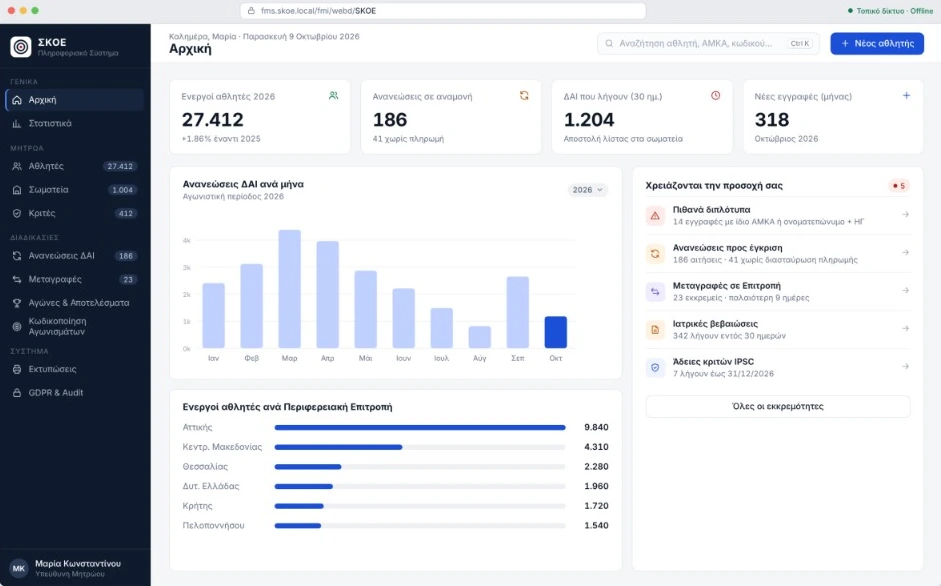
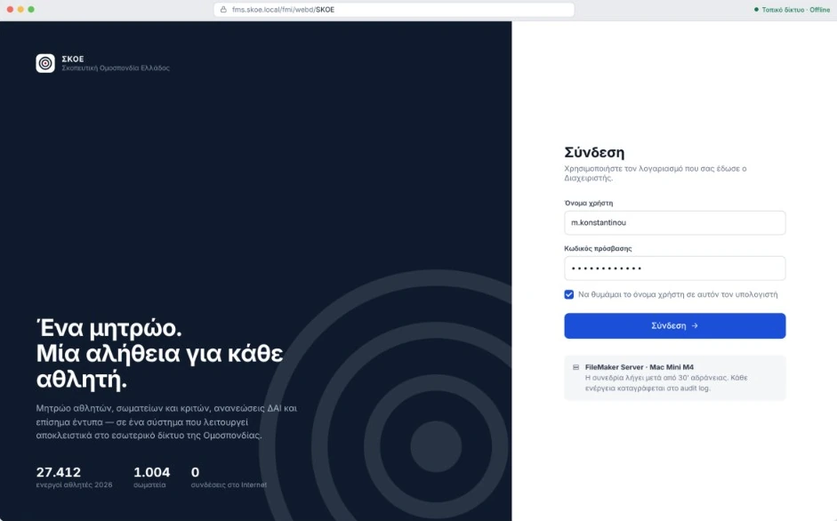
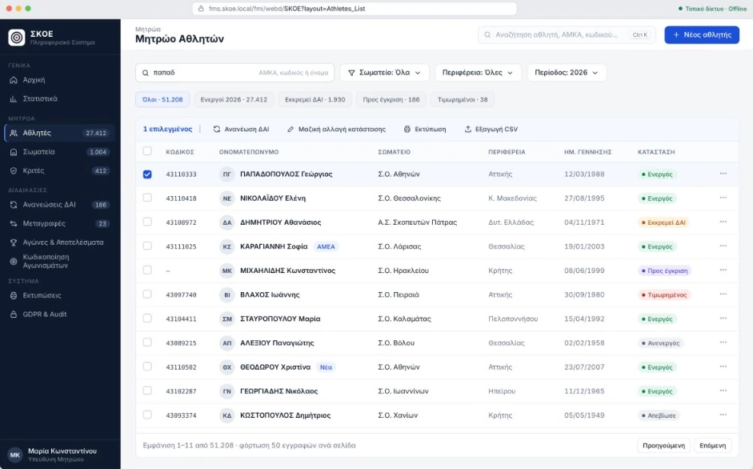
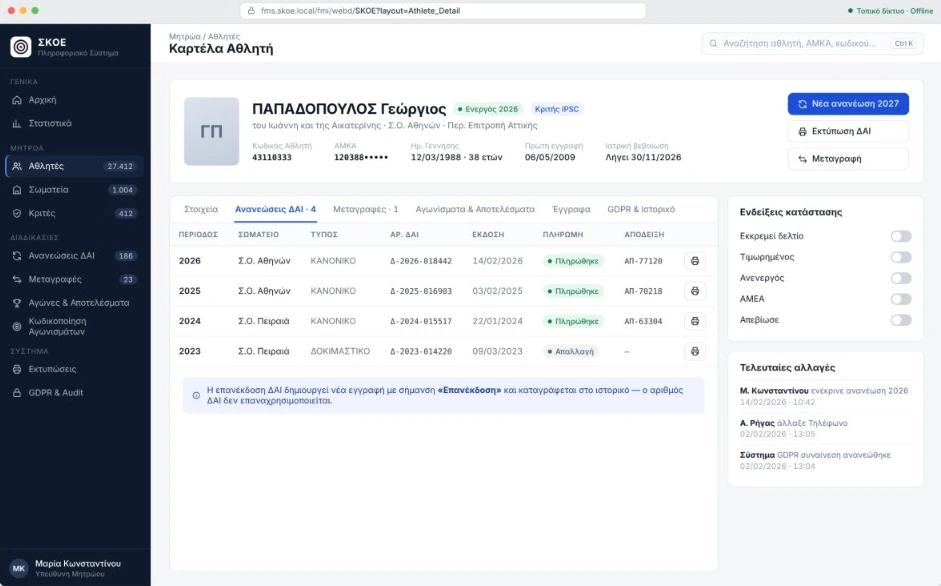
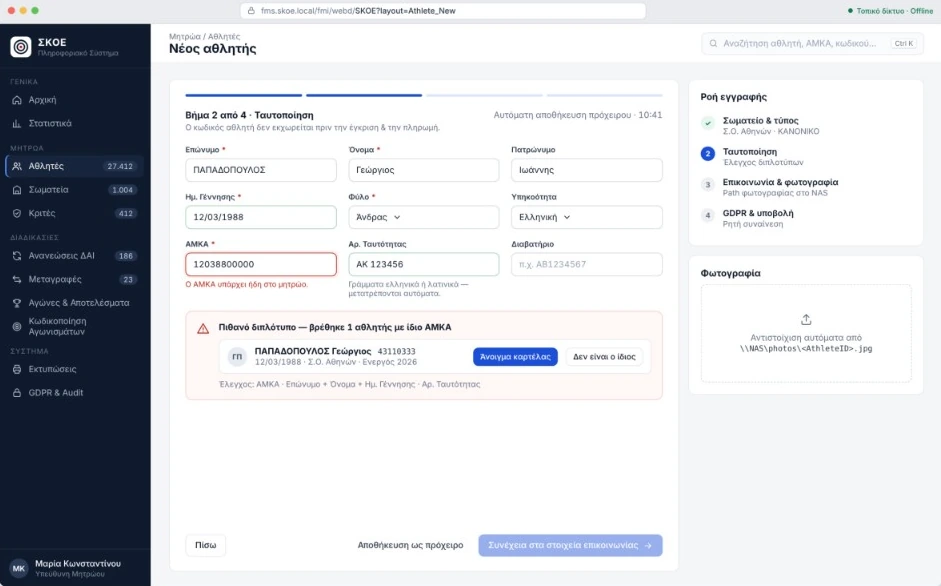
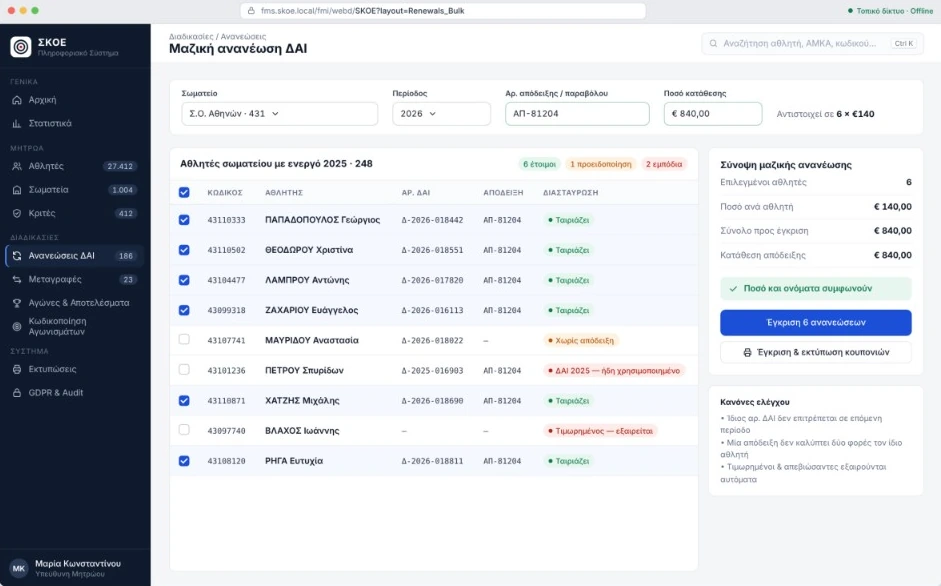
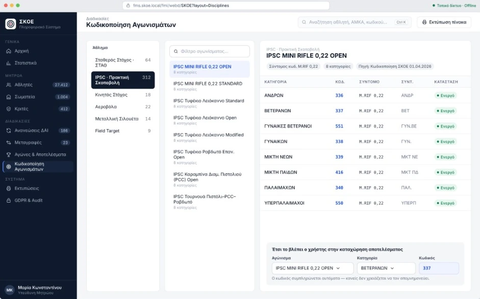
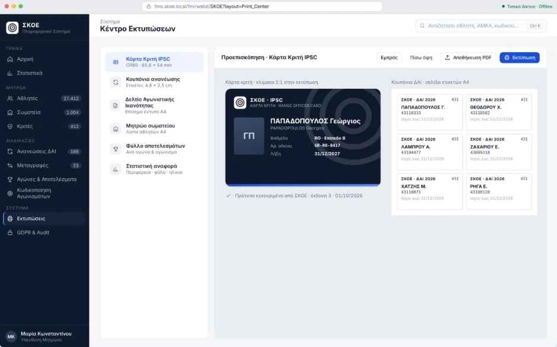

SKOE Information System
One registry. One truth for every athlete. SKOE is the new information system of the Hellenic Shooting Federation (ΣΚΟΕ): an athlete registry built on FileMaker Server and WebDirect that runs fully offline, replacing a desktop application from 1996.
Tasks
- Research
- UX UI design
- System architecture
- Database design
- Design system
- Print layouts

Overview
The Federation’s staff were working in a 1996 Windows application that froze, allowed duplicate athlete cards and could not reissue documents. I designed the replacement end to end: the research into the 12 problems the staff had officially recorded, the offline architecture, the data model, the design system and eight core screens.
The result is a light, calm interface that runs in the browser on the Federation’s existing PCs, with no cloud, no external plugins and no connection to the internet. Presented to the Federation’s management in October 2026.
The problem: a 1996 system and 12 documented complaints
Six of the 12 problems the Federation’s staff officially recorded. Each one corresponds to a specific screen of the new system.
Duplicate cards
Two athlete IDs (DAI) for the same athlete, incompatible dates and no GDPR handling.
No reissue
DAI and coupons cannot be reissued, and IPSC judge cards cannot be printed.
Renewals one by one
About 27,000 active DAI in 2025, with no way to register them in bulk.
Payments without checks
No cross-checking of receipts and names: risk of double entry.
No status flags
Penalized, struck-off, deceased or disabled (AMEA) athletes do not show in the registry.
Unstable
The program freezes, and simple lists take many steps.
Three constraints that shaped every design decision
Air-gap, WebDirect and scale. These three constraints explain why the interface is light: every element is served from the server to the browser.
connections to the internet
Air-gapped network. No cloud solution, API or external plugins.
users in the browser
FileMaker WebDirect: no installation, and every layout is designed for speed.
athletes over time
Today about 50,000 records and about 1,000 clubs, designed for four times that volume.
Four principles, one for each pain of the old system
The principles came directly from the recorded problems. They come back on every screen that follows.
One card per person
AMKA (Greek social security number), full name with date of birth, and ID card number are checked before saving.
Nothing is deleted
Archiving instead of deletion. Every change goes into an audit log with the user and the time.
Select, don’t memorize
Competition codes, clubs and types come from lists, and the code fills in by itself.
Every document, again
DAI, coupons and judge cards can be reissued at any moment, with a trace.
A closed network from the browser to the backup
The browser talks only to FileMaker Server on the internal network. Photos live on the NAS, and the database stores only the file path, so it stays light.
Workstations
15 users in the browser, WebDirect
Managed switch
“Blue” network only for FileMaker
Mac Mini M4
FileMaker Server, UPS
Synology NAS
RAID backups, photos
“Red” network: email, accounting, MyData/AADE. A separate network card on every workstation. The separation is physical, not just a policy.
The athlete at the center, their history around them
Eight tables. Renewals replace the lost history: every year is a new record, so a DAI number is never reused.
Athletes
One person record, 38+ fields, flags, GDPR.
Renewals
One per year: DAI, payment, approval.
Clubs
About 1,000 clubs and their Regional Committee.
Transfers
Transfers with a history of approvals.
Judges
Judges, licences, IPSC card.
Competitions
Competition events per period.
Results
Scoring, ranking, medal.
Disciplines
The official coding of the events.
Every table automatically keeps CreatedBy, CreatedDate, ModifiedBy and ModifiedDate. Photos and medical documents are stored as paths on the NAS.
A design system that is institutional, calm and light for the browser
An athlete’s status is always stated in words and color together, never by color alone. The same indicator system is used in lists, cards and printouts.
Inter in four sizes (19 · 14 · 13 · 11.5 px on screen), with tabular numbers for codes and amounts. Full support for Greek.
ActiveDAI pendingPenalizedAwaiting approvalDeceased
Flat colors, thin outlines and SVG icons, with no gradients or heavy shadows that would burden WebDirect.
The product interface in the screens below is in Greek, because it is built for the Federation’s Greek-speaking staff.
Screen 1 / 8 · Sign in

Local network only
The “Offline” indicator is permanent: the system never leaves the internal network.
Role-based accounts
Privilege sets for Administrator, Registry, Secretariat and Read-only.
Session timeout
Logout after 30 minutes of inactivity, with a notice to the user.
The first point of contact. On the left is the identity of the system, on the right only what is needed to sign in. The timeout and the audit log are already mentioned here.
Screen 2 / 8 · Home
The day at a glance
Active athletes, renewals pending, DAI expiring soon.
Pending items first
Duplicates, transfers, medical certificates and judge licences, one click from the list.
Regional view
Renewals per month and active athletes per Regional Committee.
The numbers on screen are indicative data. Totals are calculated with stored summary fields so the home screen loads fast in WebDirect.
Screen 3 / 8 · Athletes registry

One search field
Name, AMKA or code in the same field, with filters for club and period.
Status in words
Active, DAI pending, Penalized, Deceased: visible on every row.
Bulk actions
Renew, change status, print and export to CSV for whoever you select.
The list loads 50 records per page instead of the whole registry, so it stays fast in the browser even with 200,000 athletes.
Screen 4 / 8 · Athlete card

All the history, one place
Renewals, transfers, results and GDPR in tabs.
Reissue in one click
Every DAI can be reprinted from the history.
Flags and trace
Five status toggles and the latest changes, with user and time.
The card solves three of the old problems at once: lost history, no way to reissue, and no status flags. The AMKA appears masked.
Screen 5 / 8 · New athlete

Duplicates caught before they exist
The AMKA itself stops the registration and shows the existing card.
Four short steps
Club, identification, contact and GDPR, with automatic prefill where possible.
Code after approval
The athlete code is issued only after payment and approval by ΣΚΟΕ.
The check runs when leaving the AMKA field (script trigger OnObjectExit), not on every keystroke, so it does not send unnecessary requests to the server.
Screen 6 / 8 · Bulk DAI renewal

One club, one receipt
Select the club and record the bank deposit once.
Amount cross-check
Approval is enabled only when the amount and the payer’s name match.
Obstacles with an explanation
A reused DAI or a penalty is excluded, and the screen says why.
The most frequent task of the year. Approval runs with Perform Script on Server, so dozens of renewals are written on the server rather than from the browser.
Screen 7 / 8 · Competition coding

The official list, live
ΣΚΟΕ’s coding forms became the Disciplines table.
Sport → discipline → category
Three levels of selection, and the code (e.g. 337) fills in by itself.
IPSC unlocked
IPSC competitions are catalogued the same way as all the others.
The codes on this screen (336, 337, 551, 338, 339, 416, 340, 550 for IPSC Mini Rifle .22 Open) are the real ones from ΣΚΟΕ’s competition coding.
Screen 8 / 8 · Print center

Everything printed together
DAI, coupons, judge cards, registry, results and statistics.
Exact dimensions
IPSC judge card at CR80, coupons on 4.8 × 2.5 cm labels.
PDF or printer
Preview before printing, and save as a PDF in one click.
Print layouts are built on ΣΚΟΕ’s official forms. In WebDirect, printing goes through Save Records as PDF, which opens the file in the browser.
Fast in WebDirect, by design
In WebDirect every layout object is served from the server. That is why aesthetic simplicity is also a technical decision.
Pages of 50
Lists fetch a few records at a time, never the whole registry.
Indexed fields
Search only on stored, indexed fields, with no unstored calculations in lists.
Images outside the database
Photos live on the NAS as paths and load only on the card.
Flat layouts
Flat colors and SVG icons, with few objects per screen.
Filtered portals
A few rows per portal, sorted by relationship rather than on screen.
Work on the server
Bulk actions run with Perform Script on Server on the Mac Mini M4.
Every old problem now has a screen
A summary for management: each row is one of the officially recorded problems and the screen that solves it.
| Topic | Old system (1996) | New system |
|---|---|---|
| Duplicates | Two DAI for the same athlete | AMKA + ID check before saving |
| DAI reissue | Impossible | One click, with a trace in the history |
| Renewals | One by one | Bulk, per club |
| Payments | No cross-check | Amount and name checked before approval |
| Athlete code | Before payment | After approval by ΣΚΟΕ |
| IPSC cards | Locked | Print Center, PDF |
| Flags | None | Penalized, Inactive, AMEA, Deceased |
| Access | Desktop application that freezes | Browser, no installation |
From 1996 to 2026.
One registry, eight screens and zero connections to the internet, for 15 staff members and tens of thousands of athletes.